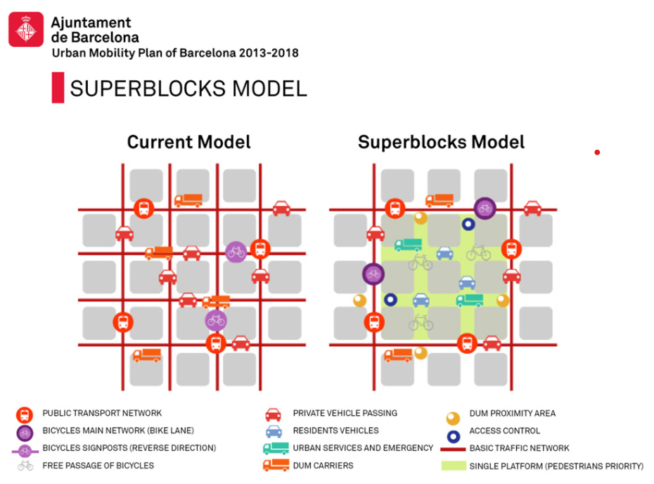
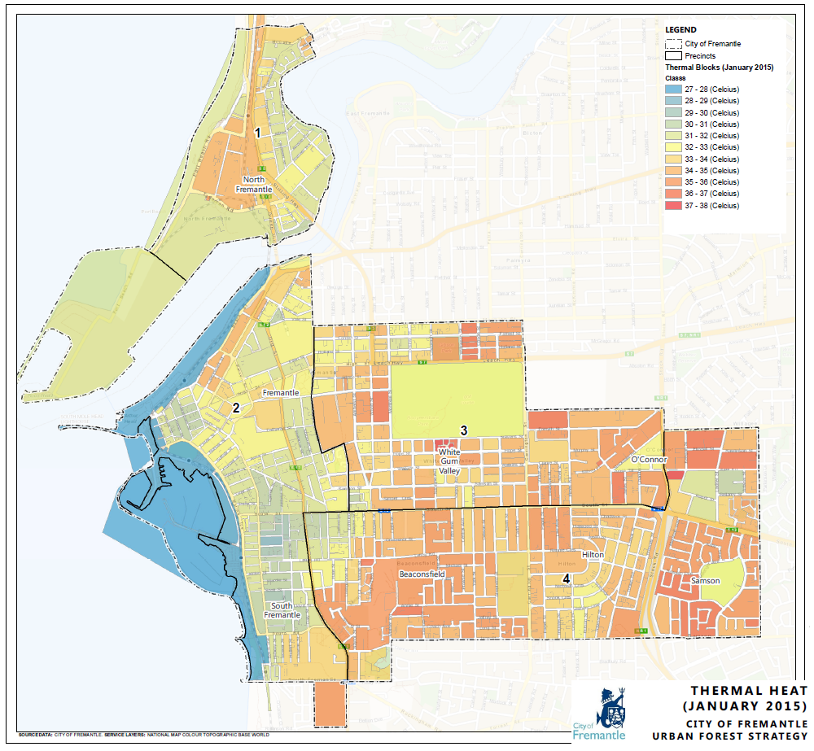
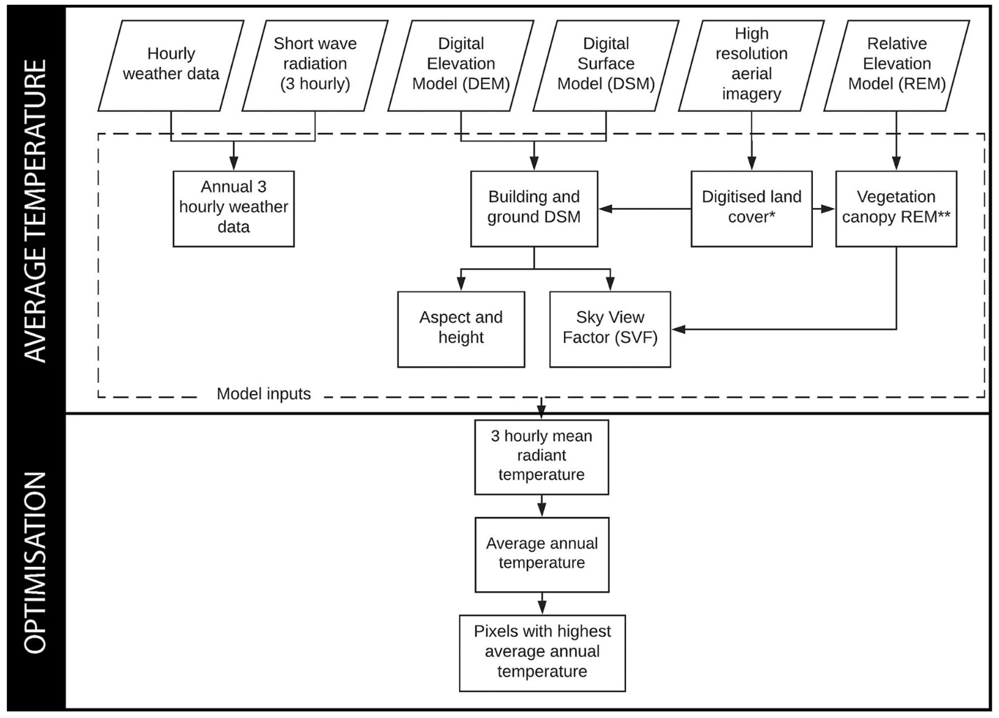
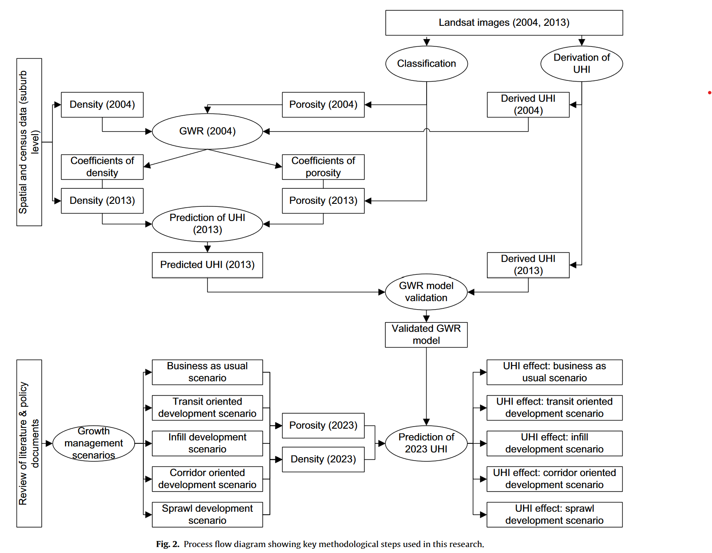
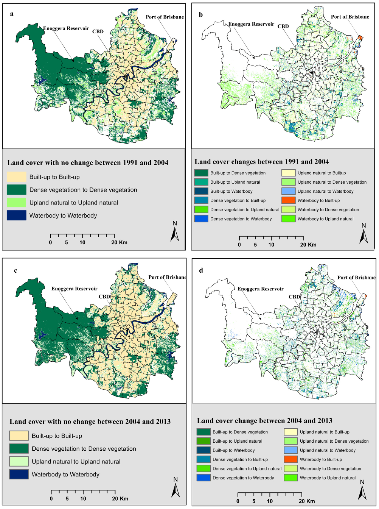
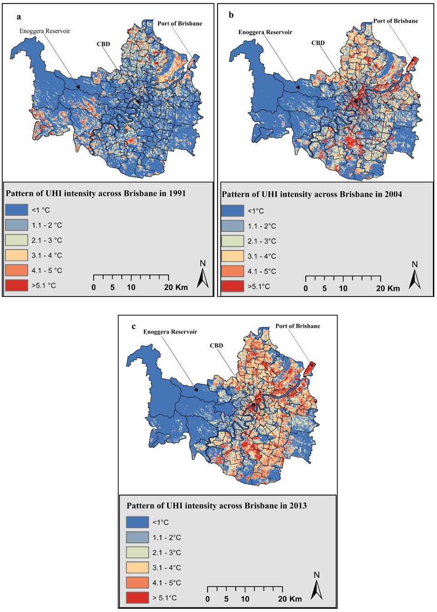
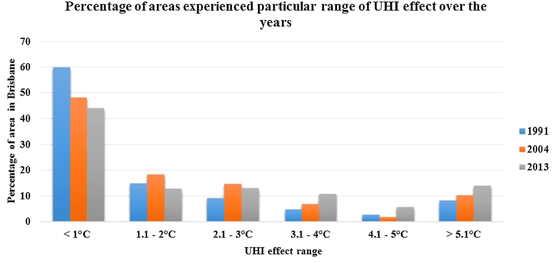
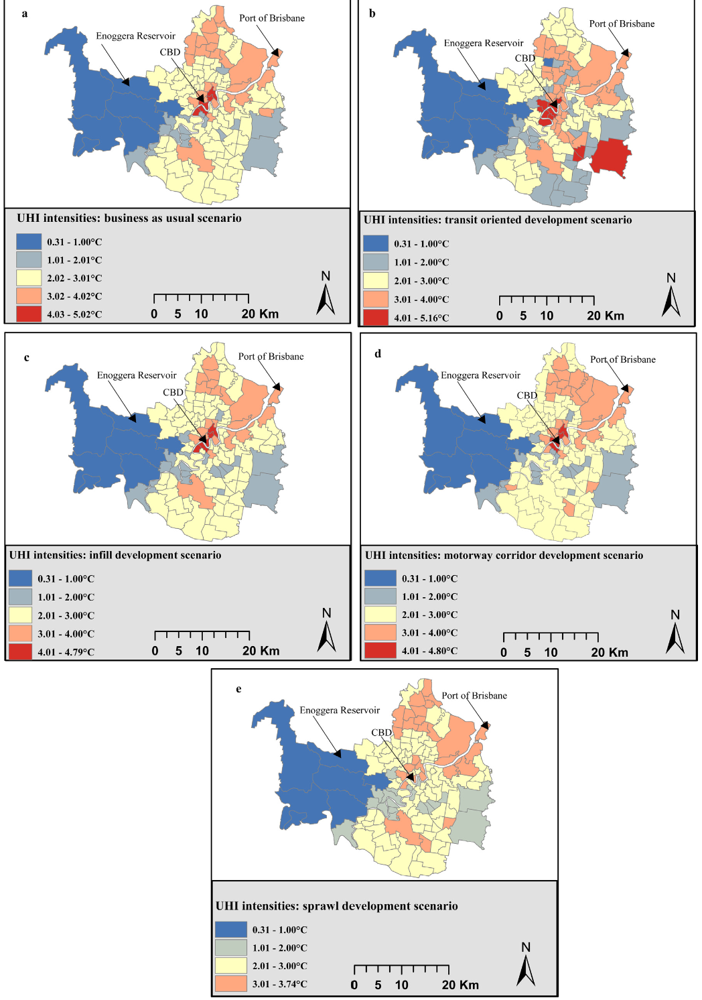

8 Week 8: Temperature and policy
This is the learning diary for week eight, mainly about Urban Heat Island and its targeting policy. The application is about evaluating the effect of policy on UHI.
8.1 Summary
8.1.1 Impact of high temperature
increasing mortality rate
peak electricity load rise, that need more resource
economic damages
8.1.2 Global Policy
- New Urban Agenda: standards and principles for planning, construction, development, management and urban improvement
generate and use renewable and affordable energy, sustainable and efficient transport infrastructure and services
give attention to the energy and transport needs of all people, particularly the poor and those living in informal settlement
promote safe, inclusive, accessible, green and quality public spaces, including streets, sidewalks and cycling lanes, squares, waterfront areas, gardens and parks
- Sustainable Development Goals (SDG)
Make cities and human settlements inclusive, safe, resilient and sustainable
support integrated urban planning and mapping
- Beat The Heat Handbook - Chapter 5
8.1.3 Local policy
- Superblocks model (Barcelona)
concern about 15 mins community with bus lanes and green axes

- Medellín Green Corridors
2016-2019 Government Plan = Medellín, Environmental Urbanism: Restore green corridors to control urban growth
- Sydney’s western suburbs
Heat Strategy and Action Plan in 2018: An in-depth assessment of the cooling landscape was the foundation of delivering this comprehensive Strategy and Action Plan
assessment of the current state of urban heat;
impacts of urban heat on people, infrastructure, the economy and the environment;
taking stock of the existing work across Western Sydney to address heat
8.1.4 Metropolitan (city) policy / temperature reduction activities
- Fremantle’s Urban Forest Plan
Increase quantity and distribution of green areas/tress (20% canopy coverage) and encourage greening of hard surface (like parking) and in private realm

- Singapore planning requirement
define the open space provision: 4.05 m2 for every 56.0 m2 of gross floor area, with detailed pandscaping requirement
8.1.5 Workflow for sustainable planning

8.1.6 Reflection on policy
no specifics guidance of responding data and approach
location is ignored, that where to build the green area
Lack of accurate and updating data for temperature image
with no consideration about spatial disparity that if policy should be equally delivered.
8.2 Application
This study generates five neighbourhood planning scenarios for Brisbane, Australia for 2023 and assesses their UHI effects. Deilami and Kamruzzaman (2017) utilities Landsat remote sensing images of 1991, 2004, and 2013 to: first, estimate and validate a Geographically Weighted Regression model in order to identify statistically significant factors influencing the UHI intensities in Brisbane; and second, predict the UHI intensities of the five policy scenarios. Two factors were identified to have significant influence on the UHI intensities in Brisbane: population density, and porosity.
8.2.1 Policy background
It is evident that sprawl development increases the UHI effect (Zhao et al. 2016) and high-density urban development can amplify the UHI intensities (Elsayed 2012). Research has also identified that the UHI intensities vary between low-populated sprawl and highpopulated sprawl (Lemonsu et al. 2015).
High-density is an important characteristic of smart growth policies. This implies that smart growth policies could also lead to increasing UHI effect.
8.2.2 Data and methodology

8.2.3 Results
- Urban growth pattern
Urban growth patterned followed the policy recommendation as outlined in the 2005 version of the South East Queensland Regional Plan that Brisbane needs a policy shift from horizontal expansion of cities to vertical expansion to accommodate population growth in a sustainable manner. Note that Brisbane population grew by 1.4% and 1.9% between 1991 and 2004, and between 2004 and 2013 respectively. Despite the population growth continued, the rate of urban expansion dropped significantly during the latter period.

- Urban Heat Island pattern
On average, the urban areas in Brisbane experienced 1.31 ◦C, 2.98 ◦C, 3.75 ◦C higher temperature compared to their rural surrounding in 1991, 2004, and 2013 respectively. Spatially, the suburbs with UHI effect vary between the periods.

Results show that compared to the 2004 and 2013 levels, Brisbane will experience a middle levels of UHI effect in 2023, irrespective of the policy scenarios.

On average, the infill development scenario, as a smart growth policy, has a marginally better potential to mitigate the UHI effect in Brisbane in 2023 compared to the sprawl development scenario conditional on the definition applied in this research. The UHI effect would be more equitably balanced spatially under the sprawl development scenario.

8.3 Reflection
8.3.1 Significance of temperature policy
Urban policy related to temperature is an important aspect of city planning and governance, particularly in the context of climate change. The effects of urbanization, such as the construction of buildings and transportation infrastructure, can significantly impact local temperatures and exacerbate the urban heat island effect, which can lead to negative health outcomes for residents and increase energy demands for cooling.
As such, urban policy related to temperature should prioritize the development of green infrastructure, such as green roofs and walls, urban forests, and parks, which can help to reduce surface temperatures, increase shading, and provide cooling effects through evapotranspiration. Additionally, policies that promote energy efficiency and the use of renewable energy sources can help to reduce the overall heat load of a city and decrease the use of energy-intensive cooling systems.
Furthermore, it is important for urban policy related to temperature to address equity and social justice concerns, as vulnerable populations are often most affected by extreme heat. Policies that prioritize the provision of cooling centers and other cooling options in low-income and marginalized communities can help to mitigate the negative impacts of heat and promote greater health equity.
8.4 Current issues about the application of UHI policy
Limited funding: The implementation of UHI mitigation policies can require significant investments in green infrastructure, such as urban forests and parks, and energy-efficient technologies, such as cool roofs and walls. However, limited funding can be a major barrier to implementing these policies at the scale necessary to effectively mitigate the UHI effect.
Challenges in measuring and evaluating policy effectiveness: It can be difficult to measure the effectiveness of UHI mitigation policies, as their impacts can vary depending on factors such as climate, land use, and building density. Additionally, there is a need for standardized metrics and evaluation frameworks to assess the effectiveness of different policies and ensure that they are achieving their intended outcomes.
Equity considerations: UHI mitigation policies must also consider equity, as vulnerable populations such as low-income communities and communities of color are often most affected by the UHI effect. Policies that prioritize these communities, such as the provision of cooling centers and the creation of green spaces in urban areas, can help to promote greater equity in UHI mitigation efforts.